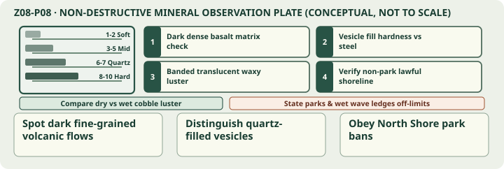

Z08-P08 · Rocks, minerals and materials · New manuscript
Midcontinent Rift Basalts, Gabbro and Lake Superior Agates
Distinguish dark volcanic basalt flows, gas-bubble amygdules, and banded quartz agates while respecting North Shore park laws.
When it applies · Lake Superior North Shore, Duluth Complex, and glacial gravel derived from rift volcanics.
Equipment · Hand lens, metric ruler, land-boundary map.

Actions
- Observe North Shore basalt flows for dark fine-grained texture and rounded gas cavities sometimes lined with chalcedony, calcite, or banded agate.[R01, R05]
- Distinguish translucent banded Lake Superior agate by hardness scratching steel and curved waxy luster rather than wet pebble sheen.[R04, R05]
- Check North Shore land status before picking up any beach cobble because state parks, SNAs, and private lakeshore prohibit collecting.[R09, R10, R11]
Failure recognition · Collecting pebbles on state park beaches or climbing wet wave-washed basalt ledges causes legal violations and fatal cold-water falls.[R09, R11, R16]
Verify · North Shore observations stay on lawful stable ground and distinguish quartz amygdules from softer calcite fillings.[R04, R05, R11]
Stop or change course · Stop immediately on wet basalt ledges, during heavy Lake Superior swells, or inside any state park or SNA shoreline boundary.[R09, R10, R16]
Evidence and editorial notes
- R01 · Minnesota Geological Survey (UMN) · Minnesota Geological Survey Maps and Regional Geology (Current web edition)
- Section: Geologic provinces and bedrock mapping · Conditions: Minnesota and Upper Midwest regional bedrock/glacial terrain
Support: Minnesota spans Precambrian Canadian Shield igneous/metamorphic rock, Midcontinent Rift volcanics, Paleozoic sedimentary strata, and Pleistocene glacial drift.
Limitations: Surficial glacial till frequently conceals underlying bedrock; local geologic maps and field verification remain necessary. · Conflicting evidence: Generalized state maps do not confirm outcrop-scale rock composition.
Editorial note: Bounds Z08 regional geology framing. · Specialist reviewer: Geologist and regional survey reviewer
Primary source · checked 2026-11-25
Current assessment · A04-R01 (2026-11-25) · Bounded support confirmed from an alternate source (A04): MGS describes Precambrian basement, partial marine strata cover, rift rocks and widespread Quaternary glacial deposits. This is regional stratigraphy and provides no site identification. Limits: Specialist review PENDING (Geologist and regional survey reviewer); publication HOLD. All release decisions pending. - R04 · USGS · Collecting Rocks: Rock Classes and Mineral Property Basics (USGS GIP)
- Section: Hardness, luster, streak, and fracture vs cleavage · Conditions: Non-destructive mineral observation with simple field cues
Support: Scratch hardness, unglazed streak, luster, and fracture-versus-cleavage patterns narrow candidate mineral groups.
Limitations: Field scratch checks cannot establish chemical purity, trace heavy metals, or absence of hazardous fibers. · Conflicting evidence: Color alone is unreliable across quartz, calcite, and feldspar varieties.
Editorial note: Core Z08 mineral screening basis. · Specialist reviewer: Mineralogist
Primary source · checked 2026-11-25
Current assessment · A04-R04 (2026-11-25) · Bounded support confirmed from an alternate source (A04): The properties are identification clues. A record of an existing surface is preferred and a destructive field test cannot establish use safety. Limits: Specialist review PENDING (Mineralogist); publication HOLD. All release decisions pending. - R05 · Minnesota DNR · Rocks and Minerals of Minnesota Educational Guide (Current web edition)
- Section: Chert, jasper, agate, and quartz occurrences · Conditions: Upper Midwest siliceous cobbles and sedimentary nodules
Support: Cryptocrystalline quartz varieties (chert, flint, jasper, agate) are hard silica rocks showing conchoidal fracture rather than planar cleavage.
Limitations: Visual similarity to fine-grained quartzite, basalt, or glass does not confirm thermal stability or structural suitability. · Conflicting evidence: None noted.
Editorial note: Anchors Z08 siliceous stone identification. · Specialist reviewer: Geologist and materials specialist
Primary source · checked 2026-11-25 - R09 · Minnesota DNR · Minnesota State Park Rules and Resource Collecting Restrictions (Current web edition)
- Section: State park natural-feature protection · Conditions: Minnesota State Parks and Recreation Areas
Support: Removing rocks, minerals, soil, or live vegetation from Minnesota State Parks is prohibited to protect natural resources.
Limitations: Verify jurisdiction boundaries before picking up specimens even along shorelines or trails. · Conflicting evidence: None noted.
Editorial note: Bounds state-park material collection. · Specialist reviewer: Minnesota DNR resource manager
Primary source · checked 2026-11-25 - R10 · Minnesota DNR · Scientific and Natural Areas Visitor Rules and Prohibitions (Current web edition)
- Section: No collecting plants, animals, rocks or fossils; Foraging · Conditions: Minnesota Scientific and Natural Areas, subject to the actual site rules
Support: Leave natural features in place unless the site lists an applicable exception or there is a valid authorization.
Limitations: Certain named sites have limited berry or mushroom exceptions. They do not extend to rocks or general digging. · Conflicting evidence: Conditions are recorded in the A03 audit.
Editorial note: Enforces SNA zero-collection boundaries. · Specialist reviewer: Minnesota DNR SNA manager
Primary source · checked 2026-11-25 - R11 · Minnesota DNR · Lake Superior Agate and Public-Land Rock Collecting Guidelines (Current web edition)
- Section: Lawful public-land gravel-pit and road-cut rock collecting limits · Conditions: Unrestricted public gravel areas and authorized private land
Support: Where lawful, rock hounding requires landowner permission on private land and compliance with local safety and collecting limits.
Limitations: Private property, active quarries, road right-of-way hazards, and tribal lands carry separate prohibitions and trespass penalties. · Conflicting evidence: None noted.
Editorial note: Clarifies lawful vs prohibited rock collection. · Specialist reviewer: Public-lands and legal reviewer
Primary source · checked 2026-11-25 - R16 · Minnesota DNR · Rocks and Minerals of Minnesota Educational Guide (Current web edition)
- Section: Sedimentary limestone, sandstone, and shale permeability · Conditions: Southeastern Minnesota karst, bluff, and river-valley sedimentary strata
Support: Sandstone, limestone, and shale differ sharply in cementation, porosity, and fissility, governing weathering and cliff instability.
Limitations: Karst bluffs and fractured shales shed rockfall unpredictably; visual inspection cannot certify slope or load stability. · Conflicting evidence: None noted.
Editorial note: Covers Upper Midwest sedimentary rock hazards. · Specialist reviewer: Engineering geologist
Primary source · checked 2026-11-25
Source lineage · New manuscript (Z08 P16 regional formations) · Classification · New manuscript.